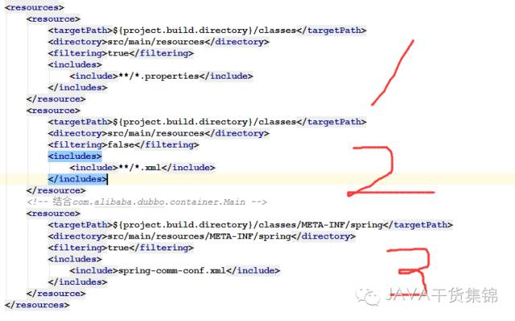
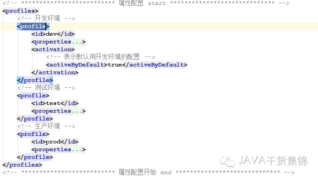

pom.xml

1、resources：
resources中是定义哪些目录下的文件会被配置文件中定义的变量替换，一般我们会把项目的配置文件放在src/main/resources下，像db,bean等，里面用到的变量在打包时就会根据filter中的变量配置替换成固定值
图片1
filtering=true表示src/main/resources下面的所有properties文件中的占位符都会被替换为profile中对应属性的值
图片2
filtering=false表示src/main/resources下面所有的xml文件中的占位符都不会被替换为profile中对应属性的值
图片3
filtering=true表示src/main/resources/META-INF/spring下面的spring-comm-conf.xml文件中的占位符都会被替换为profile中定义的属性值，并把该文件移到targetPath配置的路径下

2、profiles：
id节点为唯一的，项目打包时，需要指定
<activation>
<activeByDefault>true</activeByDefault>
</activation>
改节点设置某个profile为默认选中的
使用maven打包命令
mvn clean -Dmaven.test.skip=true package -P dev
其中 -P dev，dev就是profile中指定的id，maven profile可使用操作系统信息，jdk信息，文件是否存在，属性值等作为依据，来激活相应的profile，也可在编译阶段，通过mvn命令加参数 -PprofileId 来手工激活使用对应的profile
结合filter和profile，我们就可以方便的在不同环境下使用不同的配制
3、打包
在执行打包命令时，maven会到src/main/resources下寻找*.properties类型的文件，将pom定义的key替换到properties文件对应的${value}。
想要提升自己,工作中遇到的问题,更多JAVA技术相关文章,微信扫一扫关注作者公众号